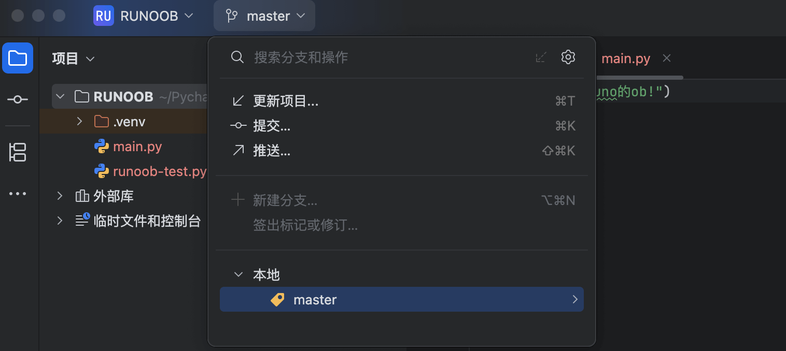
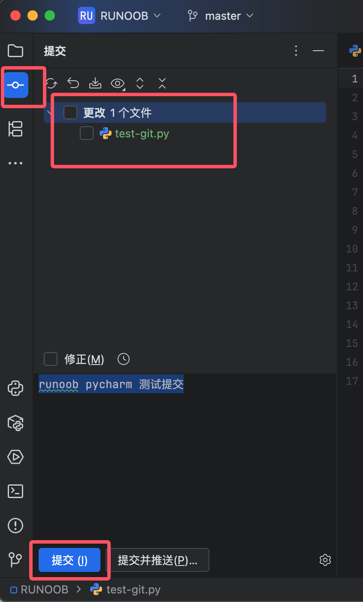
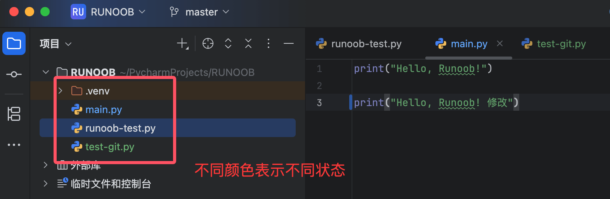

PyCharm バージョン管理統合
PyCharm は完全な Git/GitHub 統合機能を提供しており、開発者は IDE 内で直接バージョン管理操作を完了できます。
Git/GitHub の設定
-
開く
文件/PyCharm → 设置 → 版本控制 → Git -
「Git 実行可能ファイルのパス」で PyCharm が Git を自動検出したことを確認します
-
クリックテストボタンで Git が利用可能かどうかを検証します

ユーザー情報の設定
ターミナルで実行：
git config --global user.name "Your Name" git config --global user.email "your.email@example.com"
GitHub の統合
1. GitHub アカウントを追加：
-
文件/PyCharm → 设置 → 版本控制 → GitHub -
クリック+アカウントの追加
-
ログイン方法を選択：
-
GitHub でログイン：ブラウザ経由で認証してログイン
-
トークンでログイン：個人アクセストークンを使用
-

2. SSH 設定（オプション）：
-
SSH キーを生成：
ssh-keygen -t ed25519 -C "your_email@example.com" -
公開鍵を GitHub アカウントの SSH キー設定に追加します
基本操作
ツールバーのバージョン管理ボタンから Git リポジトリを作成できます：

その後、プロジェクトのバージョン管理ボタンは master（メインブランチ）になります：

コミットとプッシュ
コードのコミット
にコミットツールウィンドウ（Commit Tool Window）で：
-
コミットするファイルを選択
-
コミットメッセージを入力
-
操作を選択：
-
コミット（Commit）：ローカルのみにコミット
-
コミットしてプッシュ（Commit and Push）：コミット後すぐにリモートへプッシュ
-

ショートカットキー：
-
コミット：
Ctrl+K（Win/Linux） /⌘K（Mac） -
プッシュ：
Ctrl+Shift+K（Win/Linux） /⌘⇧K（Mac）
変更の確認
ファイルステータスの色マーカー：
-
青：変更済み
-
緑：新規追加
-
グレー：未追跡
-
赤：競合

プルとマージ
最新のコードをプル
-
Git → Pull或Ctrl+T（Win/Linux） /⌘T（Mac） -
マージ戦略を選択：
-
Merge：すべてのコミット履歴を保持
-
Rebase：直線的な履歴（リニア履歴）
-
ブランチのマージ
-
Git → 分支 → 合并分支 -
マージ先のブランチを選択
-
起こり得る競合を解決（6.3 節を参照）
履歴と差分の表示
コミット履歴を表示
-
Git → 显示历史或Alt+9 -
機能：
-
ファイル/プロジェクトの履歴を表示
-
異なるバージョンを比較
-
特定のバージョンにロールバック
-
差分を比較
-
ファイルの差分：
-
ファイルを右クリック →
Git → 比较与当前分支 -
或
Ctrl+D（Win/Linux） /⌘D（Mac）
-
-
行内の差分：
-
変更された行には色付きのマーカーが表示されます
-
マーカーをクリックすると具体的な変更内容を確認できます
-
6.3 競合の解決
1. 競合が発生するシナリオ
-
複数の人が同じファイルの同じ領域を変更した場合
-
ブランチのマージ時に競合が発生
-
コードのプル時に競合が表示
2. 解決手順
マージツールを開く
-
競合時は自動的にマージダイアログが表示されます
-
または手動で開く：
Git → 解决冲突
3ペイン比較インターフェース
-
左側：自分のバージョン（現在のブランチ）
-
右側：他の人のバージョン（マージされるブランチ）
-
中央：マージ結果の編集エリア
競合の処理
-
クリック>>左側の変更を受け入れる
-
クリック<<右側の変更を受け入れる
-
中央の領域を手動で編集して内容をマージ
解決済みとしてマーク
-
編集が完了したらクリック適用
-
ファイルを右クリック →
Git → 标记冲突为已解决
マージ結果をコミット
-
解決後のファイルをコミット
3. 高度な競合解決
外部マージツールを使用
-
設定で構成
文件 → 设置 → 版本控制 → Git → 合并工具
いずれかのバージョンを全面的に受け入れる
-
ファイルを右クリック →
Git → 接受他们的或私たちのを受け入れる
実用的なテクニック
部分コミット
-
コミットウィンドウでは、次のことができます：
-
ファイルの特定の変更を選択してコミット
-
コードブロックを右クリック →
選択した行を送信
-
変更のスタッシュ（Stash）
-
未完了の変更を一時的に保存：
-
Git → 储藏 -
復元：
Git → 取消储藏
-
対話的なリベース
-
Git → 交互式变基 -
次のことができます：
-
コミットの並べ替え
-
コミットの統合（スカッシュ）
-
コミットメッセージの変更
-